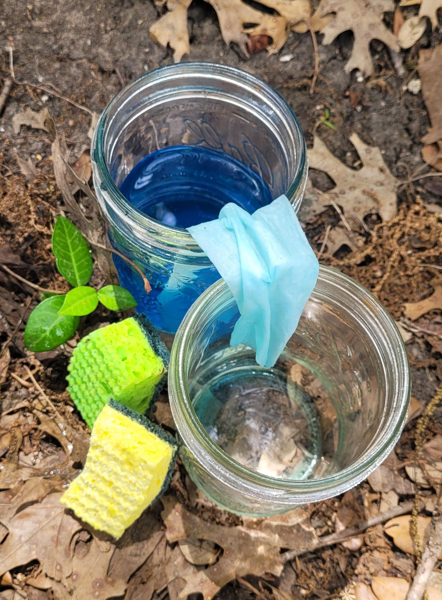
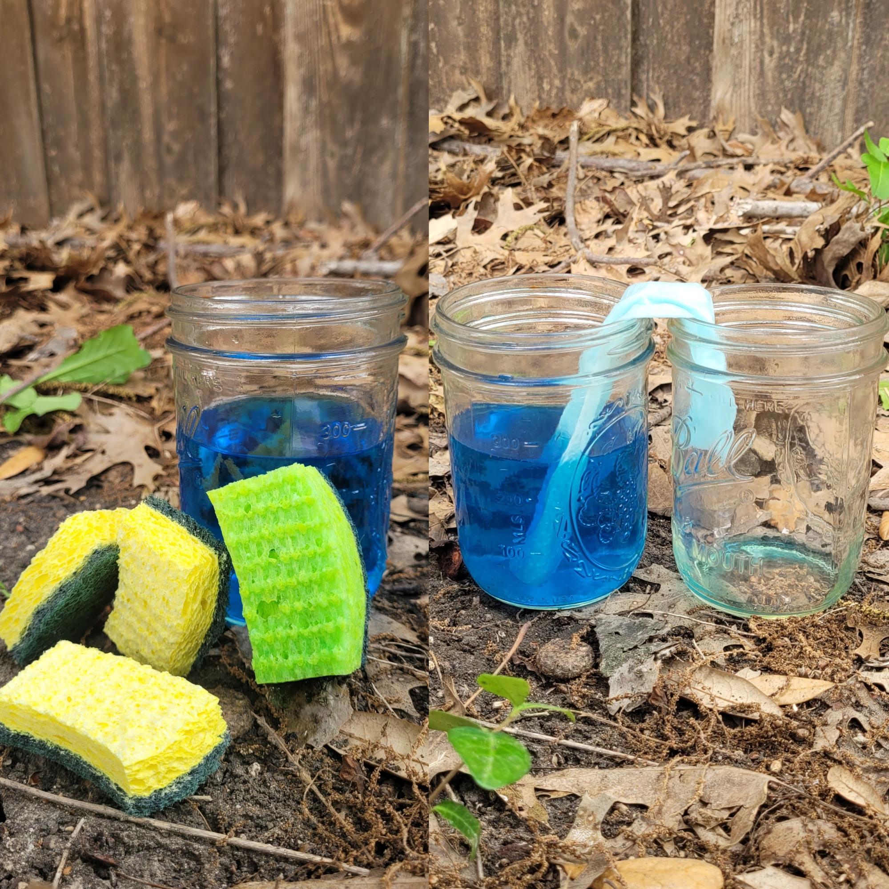
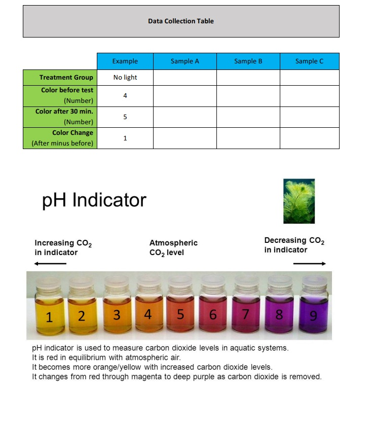

Set the tone for the walk and introduce the topic before beginning the walk. This should take between 5–10 minutes — nothing longer than the attention spans of the kids.
Opening Duaa
Start with a duaa for protection from harm and evil. The duaa can be led by either the walk leader or a child who has the duaa memorized.
“It was He who spread out the earth for you and traced routes in it. He sent down water from the sky. With that water We bring forth every kind of plant.”
Surah Taha 20:53
We have seen the incredible diversity of life that is supported by our local waterways. From tiny, underground mud-dwellers to graceful hunting herons, all are supported by the same water! And that same water is what brings forth plants in all of their various forms, as Allah mentions in the ayah above. Today, we will explore the plant life that lives around the water, and we will learn about a special type of lifeform that looks like a plant but is something entirely different!
This is information to share with the kids. What you share and the level of detail will depend on the ages of the kids in your pod. Use your discretion.
For the past few weeks, we have been studying the incredible creatures that live in our local waterways. But none of those animals — from the tiny mosquito larvae to the giant Great Blue Heron — could survive without the Sun-Catchers. Today, we are exploring the lush green plants and the strange, microscopic algae that produce the food and oxygen for the entire wetland food web!
The Divine Design: Bringing the Dead to Life
Allah (SWT) frequently uses the image of water bringing dead earth back to life to remind us of His power and mercy, as well as the reality of resurrection. When our North Texas creeks dry up in the late summer heat, they look barren. But the moment the autumn rains return, the water activates millions of dormant seeds and spores, instantly transforming the mud into a vibrant, oxygen-rich green paradise!
The Science: Plants vs. Algae
Everything green in the water does the same basic job (photosynthesis), but there are two very different types of Green Growth.
True Water Plants: Just like the plants in your garden, true aquatic plants have roots to anchor them in the mud, stems to hold them up, and leaves to catch the sun. They have a vascular system (like built-in drinking straws) to pull nutrients up from the mud.
The Awesome Algae: Algae are incredibly simple. They don’t have true roots, stems, or leaves! Because they live entirely submerged, they just absorb water and nutrients directly through their cell walls. Even though they seem simple, algae produce over half of the oxygen we breathe on Earth!
The Good Green vs. The Bad Green (HABs)
Algae is essential, but it can also be dangerous if the divine balance (Mizan) is broken.
The Good Green (Filamentous Algae): If you see stringy, hair-like green stuff stuck to rocks in the Elm Fork, that is good algae! It provides a safe hiding spot for baby fish and tadpoles, and it pumps fresh oxygen into the water.
The Bad Green (Harmful Algal Blooms or HABs): Sometimes, humans use too much chemical fertilizer on their lawns. When it rains, that fertilizer washes right into our local creeks and lakes. The fertilizer feeds a specific, microscopic organism called Cyanobacteria (blue-green algae). When the water gets hot and full of fertilizer, the cyanobacteria multiply out of control, creating a Harmful Algal Bloom.
How to Spot It: It doesn’t look like stringy plants; it looks like someone spilled bright blue or neon green paint on top of the water, and it smells like rotten eggs.
The Danger: HABs block sunlight from reaching the plants below, suck all the oxygen out of the water (causing fish to die), and produce toxic poisons that are highly dangerous to dogs and humans.
The Science: The Three Plant Neighborhoods
While algae float freely wherever the water takes them, Higher Plants (which scientists call macrophytes) have real roots, stems, and leaves. Because they need to root into the mud, they are incredibly picky about where they live. Depending on the depth of the water, higher plants divide the pond into three distinct neighborhoods:
The Emergent Zone (The Waders)
How they grow: These plants live in the shallowest water right on the muddy banks. Their roots are firmly planted in the underwater mud, but their thick, sturdy stems push the rest of the plant high above the water’s surface into the air.
The Local Residents: Cattails and Pickerelweed. Pickerelweed is especially amazing because it shoots up bright purple flower spikes that attract tons of native bees and butterflies — making it a perfect aquatic addition to a native pollinator garden!
Their Job: Their massive root systems act like an anchor, holding the muddy banks together so they don’t wash away during heavy Texas rainstorms.
The Floating Zone (The Lily Pads)
How they grow: As the water gets a bit deeper, emergent plants can’t survive. Enter the floating plants! Some (like Duckweed) are free-floating, with tiny roots dangling right in the water. Others (like Water Lilies) are rooted — their roots are in the deep mud, but they grow long, flexible, rubbery stems that reach all the way up so their flat leaves can rest perfectly on the surface of the water like solar-powered rafts.
The Local Residents: Duckweed and the giant American Lotus (which produces huge, beautiful pale-yellow flowers on our local lakes).
Their Job: Their wide leaves act like giant umbrellas, providing vital shade to the water below. This shade keeps the water cool during the hot summer and prevents harmful algae from getting too much sunlight!
The Submersed Zone (The Deep Divers)
How they grow: These plants live in the deepest parts of the sunlight zone. Their roots, stems, and leaves are completely underwater! Because they don’t have to hold themselves up in the air, their stems are very soft and flexible, allowing them to flow gently with the water’s current.
The Local Residents: Coontail (which looks exactly like a fluffy raccoon’s tail underwater) and Texas Pondweed.
Their Job: They are the ultimate underwater oxygen factories and provide the perfect, tangled hiding spots for tiny baby fish and crawling dragonfly nymphs to escape from predators.
Local Landmarks: DFW Aquatic Flora
If you visit the shallow edges of Grapevine Lake or a local retention pond, look for these common local water plants!
Duckweed (The Green Carpet): It looks like a layer of green algae covering a still pond, but if you look closely, you will see tiny individual leaves and microscopic roots dangling below. Duckweed is actually the world’s smallest flowering plant! It is a favorite snack for our local Mallard ducks.
Cattails (Nature’s Hot Dogs): These tall reeds grow on the muddy banks of almost every creek in Texas. They have a brown, fuzzy top that looks like a hot dog on a stick! They are vital to the ecosystem because their thick roots act like a giant water filter, pulling pollution out of the mud.
Arrowhead (Duck Potato): Look for tall plants with giant leaves shaped perfectly like the tip of an arrow. Native Americans used to dig up their roots and eat them like potatoes!
We have learned that Harmful Algal Blooms are mostly caused by humans putting too many chemicals into the earth. As a Khalifah (steward), we are commanded not to corrupt the earth after Allah has set it in order. When we care for our own yards or gardens, we can choose to use natural compost (like the dirt made by earthworms!) instead of heavy chemical fertilizers. By being mindful of what we put into our dirt at home, we are actively protecting the fish, the birds, and the water in our local creeks!
Now that we are all up to speed on this week’s topic, let’s start walking! The following are some conversations and activities to do as you walk. This should take about 30–60 minutes — again, nothing longer than the stamina of the kids.
The Most Beautiful of Names
Introduce the name of Allah and its basic meaning as you start your walk. Encourage the kids to reflect on the name throughout the walk, as well as mentioning it whenever relevant.
الْخَبِيرُ
Al-Khabeer
The All-Aware
For most of human history, it was assumed that seaweed was merely a plant that grows underwater. It wasn’t until taxonomy became a more developed science that it was determined that it was an entirely different organism! Though humans had been utilizing seaweed for centuries, even farming it, we did not have a proper understanding of what it was. In fact, we are still learning so much about algae and its incredible potential and usages! This may be new to us humans, but Al-Khabeer, the All-Aware, has always known everything there is to know about His creation. Everything we discover, anything that we had misunderstood, or continue to misunderstand, is known to Al-Khabeer!
Here are some observation prompts to help the kids tune into their environment and engage all of their senses.
For Kids 1–4
Stand next to some water plants. Are you taller, or the plants?
Smell the water that has algae in it. What does it smell like? Does it smell like the water from your sink at home?
For Kids 5–8
Smell: Take a whiff around anywhere you see algae, especially where the cattails and reeds anchor their massive root networks. That smell is bacterial decomposition, and the plants are thriving on it, pulling important nutrients straight out of the muck!
Feel a submerged rock that’s covered with green and blue algae. The slick biofilm is a colony of diatoms, green algae (Cladophora, Spirogyra), and cyanobacteria. Some of it is stiff and brittle, and some almost entirely made of water!
For Kids 9–12
Hornwort (Ceratophyllum) releases visible oxygen bubbles in bright light, a process you can observe in seconds. Bring a magnifying glass closely and watch patiently — can you see any bubbles?
Waterweed (Elodea) releases visible oxygen bubbles in bright light as well. Look carefully at any submerged plant stems and observe for signs of active photosynthesis.
Phew, that was a good walk! Let’s pause and apply what we have learned and reflect on what we have observed.
Stories for Blooming Hearts
Share a story from our tradition that ties to this week’s topic. Note that creating an engaging storytelling experience is on the storyteller; these are just the basic details. A story told from the heart will reach hearts!
The Man with the Two Gardens
In Surat Kahf, Allah SWT gives us stories of guidance that we are encouraged to review and read each week. One of these stories is of the men with the gardens. Allah SWT gave one of them the wealth, ability, and tawfiq to grow two beautiful gardens.
The gardens were filled with grapes and surrounded by palm trees. In the middle were all kinds of plants and a stream of water running between them.
The man who Allah blessed with two beautiful gardens started to become arrogant and attribute all the success to himself. He even reached the point of putting down the other man and telling him: “I have more wealth and manpower than you.”
He didn’t think anything would ever happen to his garden. He became so consumed with his dunya that it led him to even deny the Day of Judgment. He said, “Even if I did return to My Lord, I would find an even better ending.”
He deluded himself into believing that his successful garden in the dunya meant that he would have a good standing in the Hereafter.
The other man tried to warn him against being ungrateful to Allah, the One who created him from a single drop then made him a fully grown man. He warned him that Allah could destroy his garden at any moment and could equally grant the one who was putting down an even better garden.
Allah did in fact bring the gardens to ruins and the man who became arrogant started to regret all that he said and did. There was no one that could come to his aid now, unless he turned back to Allah.
Suggested Resource: Surat Kahf, Ayat 32–44
Takeaways
The amazing garden the man was able to grow was only through Allah’s blessing of water. This story humbles us to be grateful to Allah and remember how reliant we are on Him.
This story is a reminder to us that success from a dunya perspective (money, children, land, a successful career, etc.) is not an indication of good standing with Allah, and lack of success in the dunya does not mean that Allah is displeased with a person.
May Allah make us of those who are humble and grateful for our blessings when we have them, and not only when they are taken away.
Seaweed and other types of algae may look like plants, but they are two different creations of Allah, and they eat in different ways! Let us take a look at how each of them eats.

Materials to bring from home
3 clear cups
A clean sponge, cut into smaller pieces
A few sheets of paper towel
Water (enough to fill two of the cups)
Food coloring
Activity: How Algae Eats
Fill one of the cups up with water and add a few drops of food coloring. Choose a color that will contrast with the color of the sponge.
Drop a couple pieces of the sponge into the water. Be sure to keep a couple of pieces aside for comparison.
Allow time for the sponge to absorb the colored water. Then remove the sponge from the water and compare it to the dry sponges.
The sponges that were submerged in water should have taken on the color of the water and expanded a bit. This is how algae absorbs water and nutrients — straight into its cells!
Activity: How Plants Eat
Fill up one cup with water and add a few drops of food coloring.
Roll the paper towel lengthwise, then fold the top third of the paper towel to get a checkmark-like shape.
Submerge the longer end of the folded paper towel into the cup of colored water. Have the shorter end hang over an empty cup.
Watch as the water slowly makes its way up the paper towel and eventually drips down into the empty cup! This is how a plant eats: it sucks up water from the ground using straws that are in the plant. The food makes its way slowly to each part of the plant.
Discussion
Which one was faster: the sponge or the paper towel?
The sponge! Algae can eat more quickly than plants because there is water all around it! The plant is slower because it has to find the water, then suck it up slowly.
Algae is similar to sponges in another way. What do we use a sponge for?
Cleaning! Algae cleans up the water just like we use a sponge to clean our dishes or our counters.
Seaweed and other types of algae look like plants that live underwater, but they are not considered plants! They are a different type of creation with different anatomy and they function quite differently. Let’s take a look at how algae and plants absorb water and nutrients.

Materials to bring from home
3 clear cups
A clean sponge, cut into smaller pieces
A few sheets of paper towel
Water (enough to fill two of the cups)
Food coloring
Activity: How Algae Absorbs Water and Nutrients — Absorption
Fill one of the cups up with water and add a few drops of food coloring. Choose a color that will contrast with the color of the sponge.
Drop a couple pieces of the sponge into the water. Be sure to keep a couple of pieces aside for comparison.
Allow time for the sponge to absorb the colored water. Then remove the sponge from the water and compare it to the dry sponges.
The sponges that were submerged in water should have taken on the color of the water and expanded a bit. This is how algae absorbs water and nutrients — straight into their cells!
Activity: How Plants Absorb Water and Nutrients — Capillary Action
Fill up one cup with water and add a few drops of food coloring.
Roll the paper towel lengthwise, then fold the top third of the paper towel to get a checkmark-like shape.
Submerge the longer end of the folded paper towel into the cup of colored water. Have the shorter end hang over an empty cup.
Watch as the water slowly makes its way up the paper towel and eventually drips down into the empty cup! This is how a plant absorbs water and nutrients: through capillary action! Plants have a vascular system that is made up of straw-like structures that transport and deliver the water and nutrients to all parts of the plant.
Discussion
Critical thinking: why do plants and algae absorb nutrients in the way that they do?
Algae is surrounded by water, and can absorb it directly from their surroundings. Plants are not surrounded by water the way algae is. In fact, water can be scarce in many places on land. Therefore, plants have roots to search for and uptake water, and a vascular system to distribute it throughout the plant.
We have a vascular system, as plants do. What are some things in common between our vascular system and a plant’s vascular system? What are some differences?
Accept any correct answers. Some similarities include: both vascular systems move nutrients and energy throughout; they’re tubular. Some differences include: we have blood, plants don’t; our heart moves blood through our vascular system, plants use capillary action; we have arteries and vessels, plants have xylem and phloem.
Hydrogen carbonate pH indicator solution or pH paper
4 small test tubes or vials with caps
Opaque paper
Clear tape
Activity
Remove the algae beads by pouring them through the kitchen strainer, then use the plastic spoon to place approximately 10 beads each into two of the vials.
Fill them to the top with hydrogen carbonate pH indicator solution and cap them securely.
Fill the third vial with indicator solution only.
Fill one vial with pond/lake water where you think algae is growing and add the pH solution.
Labelling: Place a small strip of tape on each vial and label them Sample A and Sample B for the two vials containing algae beads, Sample C for the vial with indicator solution only, and Sample D for your pond water.
Record the starting colour of the indicator solution in each vial using the numbered colour chart (see printables).
Record the final colour of the indicator pH solution in each vial using the numbered colour chart.
Subtract the before colour number from the after colour number to find the colour change — a positive result indicates CO² was consumed by the algae during photosynthesis.
After completing the activity is a good time to stop for a snack. Power their brains and bodies with something nutritious! Bonus points for avoiding single-use plastics and being good Khulafa. Be sure to leave the area as you found it, or better, following the good manners taught to us by our Prophet ﷺ.
Now that this week’s walk is just about done, let’s wrap it up.
Tadabbur Among the Trees
Here are some prompts to help wrap up the walk. These prompts can be used to spark a conversation or to fill up your nature journal for today!
For Kids 1–4
Algae doesn’t have stems or roots, but it creates over half the oxygen we breathe! Where did we see the most algae today? Was it the Good Green stuck to rocks, or floating freely?
Use your crayons to try and match the exact shade of green of the algae or plants we found today. See how many different greens you can blend!
For Kids 5–8
Plants and algae are both green, but are different things. Can you think of some other things that look similar but are different, like clouds and cotton candy? Draw them!
Allah created so many different types of plants that are all supported from the same water! In the same way, Allah sent down one Quran, but it affects people in different ways. What is a way the Quran has impacted you?
For Kids 9–12
True aquatic plants have complex vascular systems (like internal plumbing) to pull nutrients from the mud, while algae are much simpler and absorb everything directly from the water around them. Even though algae seems simple, it produces half the oxygen on Earth!
Can you think of human inventions that mirror this — one complex with many moving parts (like a city plumbing system) and one incredibly simple but highly effective (like a sponge)? Sketch a mini-infographic comparing how they work!
Need more nature? We got you! Here are some additional resources to further enrich your understanding and reflection. These additional resources can be utilized by the pod, by individual families, or a combination of both — whatever best fits your needs!
Prophetic Wisdom
Find an opportunity to share the wisdom of our Prophet ﷺ as you walk.
“The example of a Believer who recites the Quran, is that of a citron which smells good and tastes good; And the example of a Believer who does not recite the Quran, is that of a date which has no smell but tastes sweet; and the example of a hypocrite who recites the Quran, is that of an aromatic plant which smells good but tastes bitter; and the example of a hypocrite who does not recite the Quran, is that of a colocynth plant which has no smell and is bitter in taste.”
Narrated Abu Musa Al-Ash‘ari — Sahih Bukhari 5427
This hadith teaches us that even though some plants may look similar or have some similarities (like plants and algae), they are functionally different from each other. Among the same family of plants, some are beneficial for us and some can cause us harm if we touch or ingest them. Similarly, believers and hypocrites who do or don’t read the Quran can look the same from the outside, but are very different. May Allah make us like the citron fruit, believers who recite the Quran and act upon it. Ameen!
“He brings the living out of the dead and the dead out of the living. He gives life to the earth after death, and you will be brought out in the same way.”
The revival of life, such as a seemingly barren creek that begins to teem with life after some rain, should always serve as a reminder for Resurrection! Just as Allah brings the dead earth back to life, He will bring us back to life in the same way, and we will be answerable for all that we have done.
“Corruption has flourished on land and sea as a result of people’s actions and He will make them taste the consequences of some of their own actions so that they may turn back.”
The frivolous pursuit of a perfect lawn is one of the causes of the proliferation of Harmful Algal Blooms, which has a number of negative downstream effects. There are many such examples of human vanity and greed leading to imbalance in the ecosystem, which eventually ends up coming back to harm us!
The Most Merciful (55:7–9)وَٱلسَّمَآءَ رَفَعَهَا وَوَضَعَ ٱلْمِيزَانَ ۞ أَلَّا تَطْغَوْا۟ فِى ٱلْمِيزَانِ ۞ وَأَقِيمُوا۟ ٱلْوَزْنَ بِٱلْقِسْطِ وَلَا تُخْسِرُوا۟ ٱلْمِيزَانَ
“He has raised up the sky. He has set the balance so that you may not exceed in the balance: weigh with justice and do not fall short in the balance.”
We have visited the concept of the mizan throughout the rhythm. We have seen example after example of how Allah had created everything with perfect balance, and how corruption disrupts this natural balance.
A flow of movements to get kids’ energy out at the beginning, or help them calm down at the end of the walk.
1
Begin by standing with both feet wide and firm into the earth, then let the upper body arc slowly side to side from the waist, tall and hollow like a reed stalk in moving water.
2
Stand tall through the trunk, then release the arms and fold slowly forward and down, letting everything hang like long trailing branches in a gentle current.
3
Standing, extend both arms in a slow full circle at shoulder height, feeling each fingertip trace an orbit around the still centre of the spine.
4
In a forward fold, let the fingers spread and flutter gently with each breath, soft and many-branched, swaying in an invisible current.
5
From standing, bend knees into a low squat, draw slowly upright in one long inhale, arms sealing together overhead into a tight spike, move the whole body up in one vertical line reaching out of the water.
6
Move to seated, soles of the feet together, hands cupped at the heart; on each exhale, let the knees drop a little lower and the hands open outward like a flower unfurling on still water.
7
Sit cross-legged and press both palms flat to the floor; feel the body move downward into the sediment, heavy, still, and deeply anchored.
8
Lie on your back, limbs loose and weightless, letting the body drift without intention, trusting the surface to hold you.
9
Sink completely into the floor, imagining the body as a soft mat of algae on the riverbed — absorbing, still, nourishing everything above.
Numbered colored chart for experiment for 9–12 yo:

From surface to sediment, aquatic algae stratified by light: The free-floating algae drift in the sunlit upper column near the Riparian Bank. Cyanobacteria may form foam or scum on the water surface, bloom at the surface, diatoms glint mid-water, stonewort anchors itself upright in the lower reaches, and a benthic algae mat carpets the nutrient-rich floor.